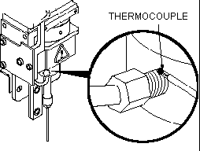
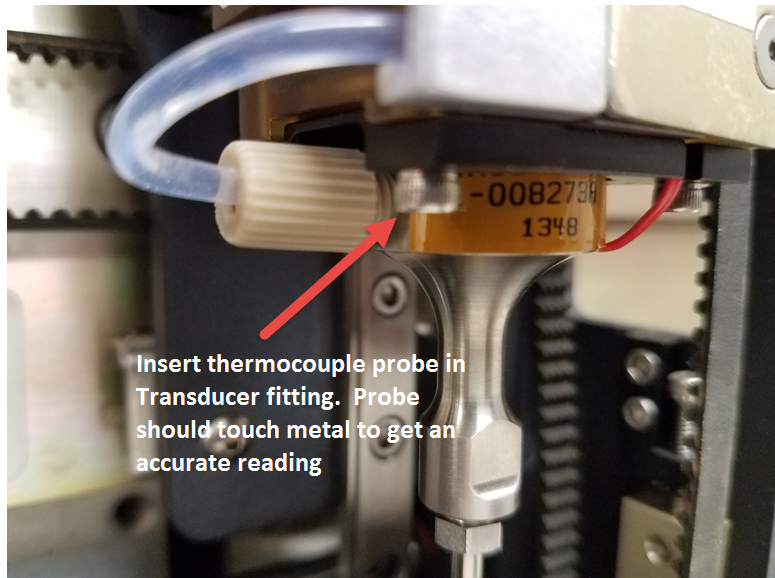
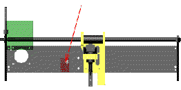
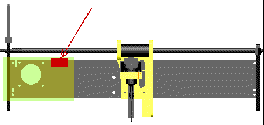
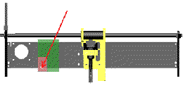

An approved Digital Multimeter and thermocouple module (Fluke 80TK with thermocouple wire).
This procedure provides instructions for adjusting the temperature of the Ultrasonics Transducer.
Perform this procedure when replacing:
- The Ultrasonic Transducer
- The Pipettor Interface PCB
- Major and Minor PMC inspections
Note:
- The transducer temperature affects the main pipettor's tip displacement and magnetic particle suspension.
- The temperature of the transducer is dependent upon the amount of current sent through the heater by the heater controller.
- The transducer temperature is not monitored by the system software an external temperature probe is required.
- This procedure if for measuring and adjusting the temperature on both metal and CnS service loop tubing.
-
Perform these steps to adjust the Ultrasonic Transducer temperature.
-
Ensure that the instrument is powered up (with the transducer heater connected) for at least 15 minutes.
-
Place the thermocouple tip as shown below in the reference pictures. Then read the temperature when it stabilizes. The temperature should be 37o + 2o.
For CnS service loop connectors only:
Note: If any accurate measurement cannot be obtained from transducer (as shown in the picture), an alternative option would be to drain the pipettor, remove the CnS connector and measure the temperature on the transducer thread.
| Service Loop connector type
|
Reference Picture
|
| Metal
|

|
| CnS
|

|
-
If the temperature is not within the range of 35 to 39 ºC then adjust the pot on the Heater Controller to set the transducer temperature to 37o + 2o. Allow at least 10 minutes for the temperature to stabilize before re-adjusting. Refer to the next section for pot locations.
Note: Moving the adjustment screw 1 turn clockwise will increase the temperature by approximately 1º C.
-
Use this table to locate the Heater Controller adjustment screw for the pipettor temperature.
| Part
|
Function
|
|
Controller location:
- On the back side of the Gantry.
Adjustment pot access:
- From the front through an access hole in the gantry.
|
Non-certified gantry

|
|
Controller location:
- On the Pipettor Interface PCB.
Adjustment pot access:
- From the front through an access hole in the gantry.
|
Certified gantry

|
|
Controller location:
- On the Pipettor Interface PCB.
Adjustment pot access:
- From the front through an access hole in the PCB.
|
Access 2 (3 Inch Pipettor)

|